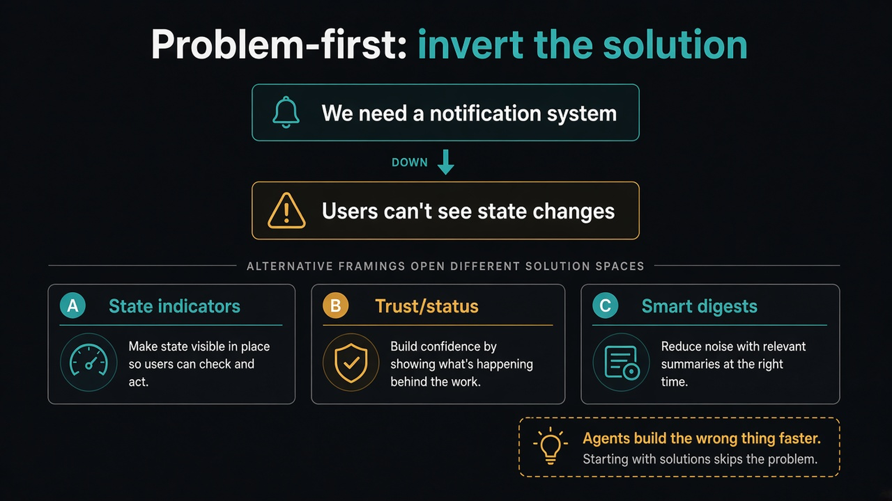

Invert the solution before agents ship it
Source: George / prodmgmt.world (@nurijanian)
original post
What it claims
When a team hands you a pre-baked solution (“we need a new notification system”), do not block and do not rubber-stamp. Treat the solution as a compressed confession of a problem, then decompress it: underlying problem, assumption challenges with validation, three alternative framings, and a draft message so the team is not ambushed. Agents will happily build the wrong thing faster, so the skill that inverts bad ideas matters more, not less. Run it reverse on your own idea pile — most die at “evidence: none.”
Why it matters for a PO
Roadmaps full of solutions arrive with political momentum. Telling people to halt for research burns influence. Digging underneath keeps you useful while protecting conviction. With AI coding agents, triage capacity — not idea generation — is the bottleneck.
3 takeaways
- Solution-jumping is evidence of pain; decompress before you commit a quarter of eng time.
- Force three alternative framings so “notification system” does not hide three different builds.
- Triage your own ideas the same way; delete anything with no evidence status.
Practice this week
Take one solution already on your backlog. Write the problem underneath, three assumptions with a validation test each, and three framings that open different solution spaces. Share the decompression in refinement before anyone opens a PR.